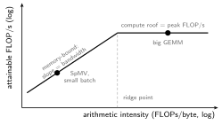
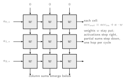

Deep-learning accelerators specialize arithmetic and data movement for tensor workloads. Matrix multiplication and convolution offer substantial reuse; attention, reductions, embedding lookups, and small batches can instead be bandwidth- or latency-limited.
The systems framing is accelerator-level parallelism, the next rung on a familiar ladder:
| Level | Unit of concurrency | Exploited by |
|---|---|---|
| ILP | instructions | superscalar, OOO |
| DLP | data elements | vector, SIMD, GPU |
| TLP | threads | multicore, SMT |
| ALP | whole accelerators | NPU + GPU + ISP + codec, running at once |
A system can run several specialized engines concurrently, but usable parallelism depends on dependencies, memory bandwidth, and workload scheduling.
The roofline bounds throughput at a specified memory level: where is operations per byte transferred at that level. The ridge point is . State whether a MAC counts as one or two operations.

Below the ridge intensity, bandwidth limits the roof; above it, compute capacity limits it. Tiling and batching increase reuse, but small dimensions, fill/drain time, dependencies, and contention can keep achieved performance below either bound.
Moving an operand from DRAM usually costs much more energy than a narrow arithmetic operation; nearby buffers are cheaper to access. Exact ratios depend on technology, precision, memory size, and access width. Optimize reuse at registers, local buffers, and SRAM before adding MAC capacity.
A systolic array is a 2D grid of processing elements, each doing one MAC per cycle and passing operands to its neighbors: data pulses through the array with no instruction fetch, decode, or register-file access per operation:

For a weight-stationary PE, retain a weight locally, pass activations horizontally, and pass partial sums vertically:
// Signed operands; 8-bit inputs and 32-bit partial sums.
logic signed [7:0] a_in, w, a_out;
logic signed [15:0] product;
logic signed [31:0] psum_in, psum_out;
assign product = a_in * w;
always_ff @(posedge clk) begin
a_out <= a_in;
psum_out <= psum_in + {{16{product[15]}}, product};
endThis is a PE fragment: the array must load weights, skew inputs, seed partial sums, and track valid cycles.
This is the architecture of Google’s TPU: the v1 MXU is a 256×256 grid of 8-bit MACs (65,536 of them, 92 TOPS peak) with 24 MiB of unified buffer plus 4 MiB of accumulators (Jouppi et al., ISCA 2017).
Neighbor forwarding reuses operands without rereading a central register file for every MAC. For an array, computation can scale as while boundary operand bandwidth scales as , for a suitable mapping.
Loading stationary weights over input lanes takes at least cycles. The array still stores weights; large layers require repeated tile loads. Fill/drain overhead and array utilization matter.
Dataflows name what stays put in the PEs, the key mapping choice since movement is the cost:
| Dataflow | Stationary | Best when |
|---|---|---|
| weight-stationary (TPU) | weights | high weight reuse: big batches |
| output-stationary | partial sums | partial-sum traffic dominates |
| row-stationary (Eyeriss) | mapped filter rows, activations, and partial-sum reuse | reducing several kinds of movement together |
No dataflow wins everywhere, which is why mappers/compilers pick per layer.
Inference tolerates far more numerical error than training, so accelerators compute narrow:
| Format | Used for | Note |
|---|---|---|
| FP32 | training baseline | precise gradients |
| BF16 / FP16 | mixed-precision training, inference | half the traffic (Floating Point Architecture) |
| INT8 | inference | needs calibration (scale, zero point) |
| FP8 / INT4 | aggressive inference | accuracy validated per model |
Narrow operands reduce storage and traffic. Integer multiplier area roughly scales with the product of operand widths, but accumulators, control, buffers, and wiring prevent a universal fourfold increase in complete MAC density.
Sparsity can reduce arithmetic and traffic: pruned weights and post-ReLU zero activations mean MACs that contribute nothing and can be skipped, with compressed formats saving the traffic too. The catch: unstructured zeros defeat the regular dataflow that makes the array efficient, so hardware-friendly designs force structured sparsity (fixed patterns, e.g. 2-of-4) and accept a lower sparsity ratio for exploitable regularity.
CPUs hide DRAM behind transparent caches; TPU-class accelerators expose a scratchpad that software fills explicitly:
| Cache | Scratchpad | |
|---|---|---|
| what’s on-chip | hardware decides, dynamically | compiler decides, statically |
| latency | hit/miss dependent | more predictable; bank conflicts and arbitration still matter |
| model | ordinary loads/stores | explicit copy-in/copy-out |
Explicit residency lets the compiler schedule transfers and reuse. DMA latency, bank conflicts, and contention still need handling; scratchpads trade automatic replacement for software responsibility.
GPUs combine programmable SIMT execution with specialized tensor units. TPU-style designs emphasize matrix engines and explicit data movement. Neither label fixes array size or guarantees superiority; utilization, precision, bandwidth, and workload shape determine performance.
A transformation is bit-exact only if it preserves specified arithmetic, rounding, and operation order. Parallel reductions can change FP results. Quantization and pruning require model-accuracy validation in addition to hardware verification; voltage overscaling introduces separate reliability risks.
Author: Sai Govardhan (saigov14@gmail.com)
License: MIT.